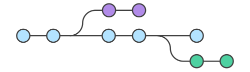

Versiebeheer met Git¶

Git is een veelgebruikt hulpmiddel voor het bijhouden van wijzigingen in broncode (of andere verzamelingen van bestanden en mappen). Het bijhouden van deze wijzigingen is niet alleen handig voor jezelf, maar ook als je gaat samenwerken met anderen.
Installeren¶
Git is software die je moet installeren. Misschien heb je het al geïnstalleerd, lees dan in ieder geval de installatiestappen door want ze kunnen misschien nog wat tips bevatten!
Windows¶
Windows Terminal¶
Deze stap is niet noodzakelijk, maar we raden je aan om eerst een moderne terminal omgeving op te zetten omdat je Git vaak op een command line zal gaan gebruiken. Editors als VScode hebben vaak al een ingebouwde (moderne) terminal, maar jouw systeem misschien nog niet.
Waarom modern? De standaard terminal van Windows is oud en dateert uit de vorige eeuw. Microsoft is deze omgeving aan het vernieuwen, onder andere met een nieuwe terminal applicatie (Windows Terminal) die je kan installeren via Microsoft Store. Je zal straks zien dat je deze terminal als standaard kan instellen (wat ook de samenwerking met Git zal vergemakkelijken!).

Start na installatie Windows Terminal, want je zal een paar dingen willen aanpassen via Settings!

Kies voor Windows Terminal als Default Terminal application en vanaf nu zal de oude (antieke!) terminal omgeving niet meer worden gebruikt!
Onderaan dit scherm vind je ook de optie Launch size waarmee je de standaard grootte van de terminal kan instellen, wij raden 80 kolommen en 24 rijen aan.
Notitie
De waarde 80 voor het aantal kolommen heeft een historische achtergrond, dit was het aantal kolommen van een IBM ponskaart. Nog steeds wordt deze breedte vaak aangehouden voor terminals en soms ook in editors (als het punt waar tekst moet gaan omlopen naar een volgende regel).
Verken verder welke opties je nog meer kan instellen om Windows Terminal naar jouw smaak aan te passen, bijvoorbeeld met een kleurenthema zoals wij hebben gedaan.
Git installeren¶
Ga naar https://git-scm.com/download/windows en download Git voor jouw systeem. Tijdens de installatie kan je voor vrijwel alles de standaard opties kiezen, maar bij een paar stappen moet je even opletten!

Git GUI Here hoef je niet te kiezen
Ook Git Bash Here is niet noodzakelijk (maar mag je laten staan)
Selecteer wel Add a Git Bash Profile to Windows Terminal
Optioneel kan je kiezen voor Check daily for Git for Windows updates

Editors als VSCode hebben Git ondersteuning geïntegreerd en daar zal je het meest mee gaan werken. Een mogelijke andere situatie zal zijn dat je Git direct via de terminal gebruikt en dan is het handig om een editor te hebben die je in de terminal kan gebruiken. We raden hier Nano aan, een eenvoudige en makkelijk te gebruiken editor.

Kies hier voor Override the default branch name for new repositories en vul de naam “main” in.

De bovenstaande stap is belangrijk, kies er voor om Git op de command line te kunnen gebruiken!

Kies bij deze optie voor Use Window’s default console window. Je zal lezen dat Git deze optie afraadt, maar deze redenen gelden niet meer omdat je eerder Windows Terminal als standaard console (terminal) hebt ingesteld.

Tot slot, kies voor Git Credential Manager, deze optie is van belang voor het onthouden van gebruikersnaam en wachtwoord als je online diensten als GitHub gaat gebruiken.
macOS¶
Er zijn verschillende manieren om Git op een Mac te installeren. De meest eenvoudige is waarschijnlijk om de Xcode Command Line Tools te installeren, op Mavericks (10.9) of hoger kun je dit eenvoudig doen door Git vanuit de Terminal app aan te roepen met bijvoorbeeld
$ git config --list
Als je Git nog niet hebt geïnstalleerd zal het je vragen om het te installeren met de XCode Command Line Tools.
Als je een meer up-to-date versie wilt kan je Git ook direct downloaden en installeren via https://git-scm.com/download/mac.
Linux¶
Git zal waarschijnlijk al op jouw systeem aanwezig zijn, controleer dit door Git het aan te roepen in een terminal
$ git --version
Gebruik jouw package manager (apt, rpm) om Git te installeren als het ontbreekt, bijvoorbeeld
$ sudo apt-get install git
Configuratie¶
Het eerste (en enige) wat je na installatie nog moet doen is het instellen van jouw naam en emailadres. Dit is belangrijk omdat Git bij iedere commit (het vaststellen van wijzigingen in jouw code) deze informatie gaat gebruiken. Open een terminal en typ het volgende
$ git config --global user.name "Jouw Naam"
$ git config --global user.email jouw@naam.com
Gebruik hier natuurlijk jouw werkelijke naam en emailadres! Je kan deze regels meerdere keren uitvoeren, bijvoorbeeld om het emailadres te wijzigen. Controleer vervolgens of de instellingen corrrect zijn
$ git config --list
user.name=Jouw Naam
user.email=jouw@naam.com
init.defaultbranch=main
color.status=auto
color.branch=auto
color.interactive=auto
color.diff=auto
...
Let op, jouw uitvoer kan verschillen maar je zal in ieder geval de opties user.name en user.email terugzien die je eerder hebt gezet. Je kan ook controleren wat Git denkt dat de waarde van een specifieke optie is door git config <optie> te typen
$ git config user.name
macOS en Linux¶
Controleer of de optie init.defaultbranch is gezet en gelijk is aan “main”. Wijzig het als volgt als dit niet het geval is
$ git config --global init.defaultbranch main
Grafische omgeving¶
Git is een command line applicatie, omgevingen als VSCode weten van Git en hebben daar vaak een eenvoudige grafische interface voor. Het is waarschijnlijk dat jouw installatie (Windows of Linux) naast git (of git.exe voor Windows) ook gitk bevat, een eenvoudige grafische interface voor Git. macOS gebruikers zullen een ander alternatief moeten gebruiken.
Een populaire grafische omgeving voor Git is GitHub Desktop voor macOS en Windows, Linux gebruikers kunnen versies voor verschillende distributies vinden op https://github.com/shiftkey/desktop/. Andere gafische interfaces kan je op Git GUI Clients vinden.
Belangrijk
We raden je aan eerst goed te begrijpen hoe Git werkt en dit eerst met de command line te oefenen, pas dan zal je ook de grafische interfaces beter begrijpen en ze efficiënt kunnen gaan gebruiken!
Git is nu klaar voor gebruik!